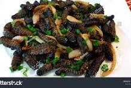

Mopane Worms Recipe

How to cook caterpilla
There are many different ways you can use to cook caterpilla, so the choice will be yours.
All you need for the recipe is your caterpilla,spices, salt, oil and flour.
Ingredients
- 500g dried mopane worms
- 3 tomatoes, diced
- 2 onions, diced
- 1/2 tsp tumeric
- 3 fresh chillies, finely chopped
- 3 cloves garlic, finely chopped
- Tbsp of fresh ginger, finely chopped
-
- A little cooking oil
- Salt
Steps
- Soak the worms in clean water for 15 min, drain and give the worms a last clean.
- Fry the onions i a little oil on medium heat. Add tumeric, chillies, garlic and ginger. Fry for about5 min.
- Add caterpillars.
- Add tomatoes and cook until the caterpillars have softened a bit but are still crunchy.
- Salt to taste and serve with sadza and green vegetables